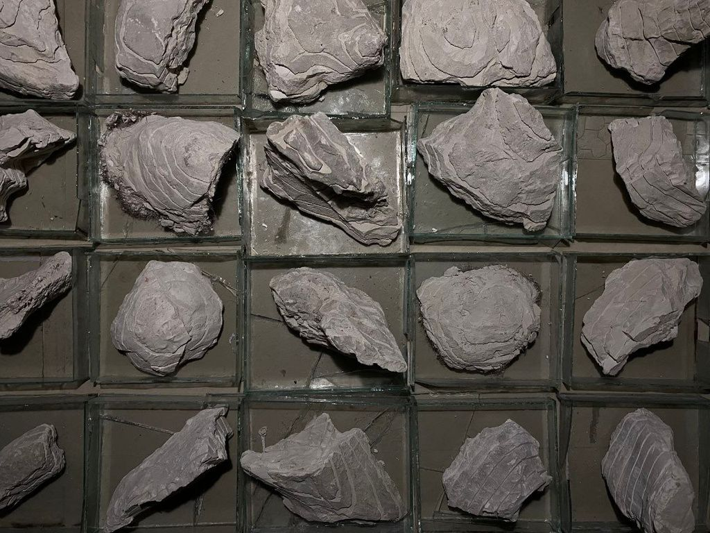
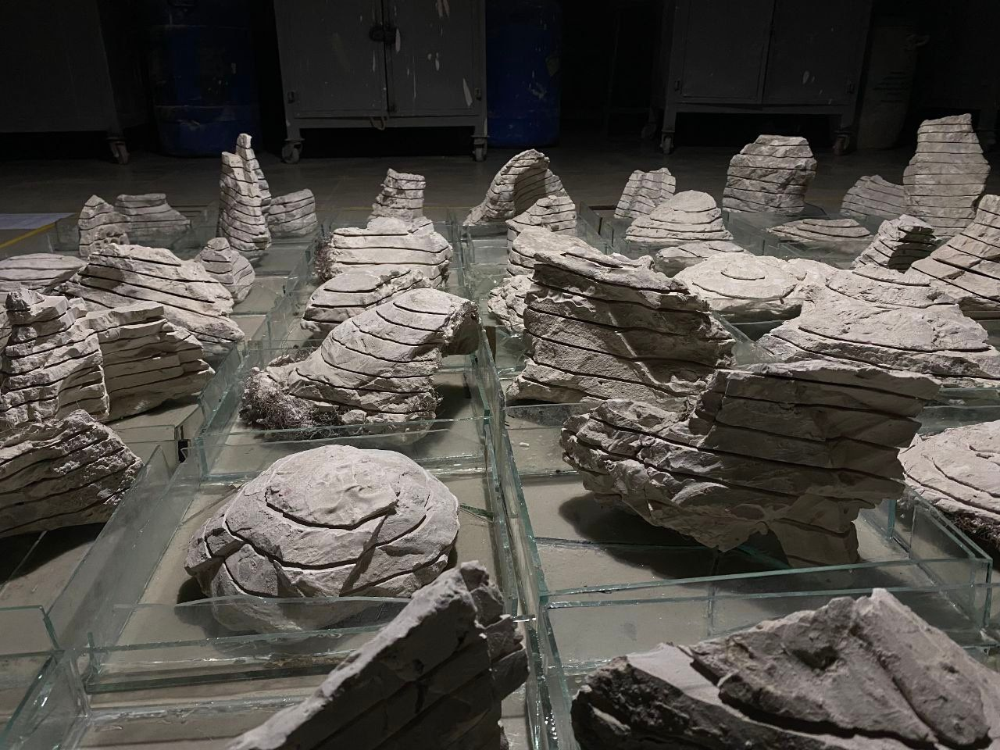
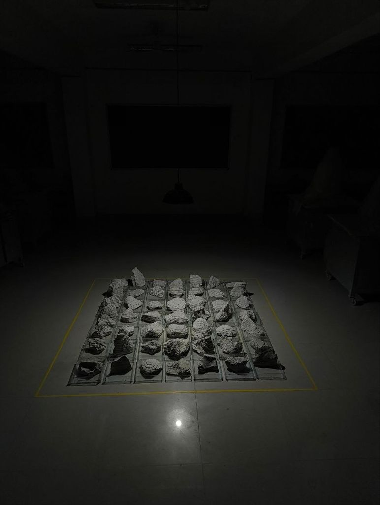
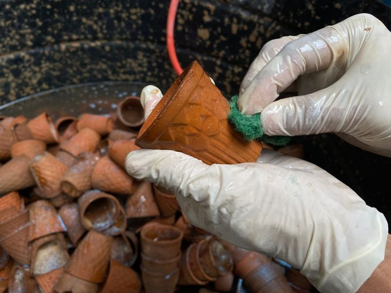
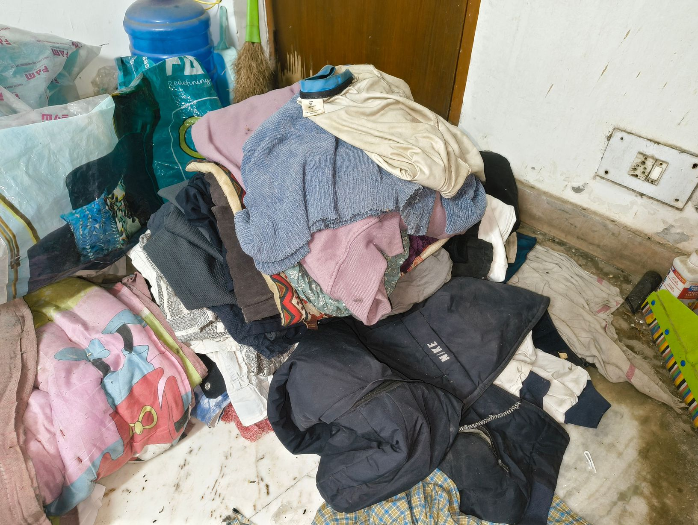
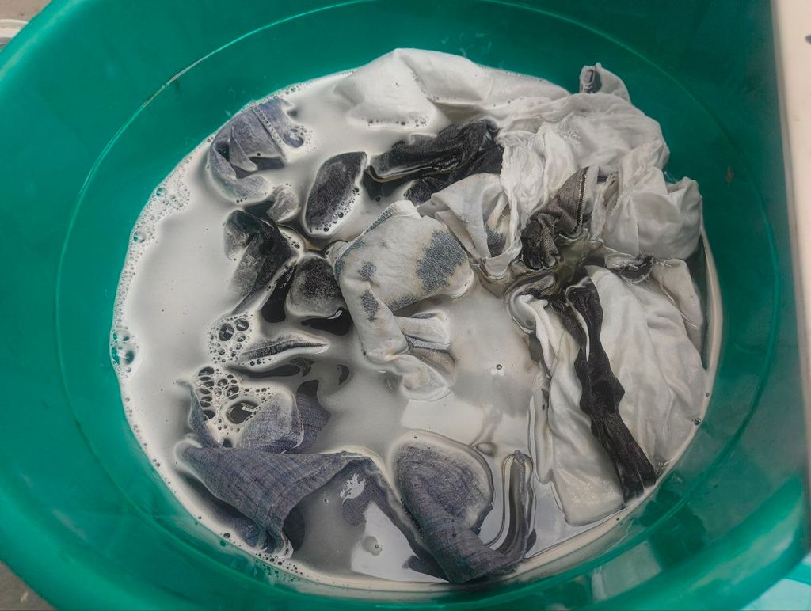

Concept Note:
I walked into that room carrying a bag I had carried before. Not as a performance. As a job. As a postman in Palakkad, this weight was my daily reality, and the wage inside those envelopes was what that reality paid.
Today I asked eight strangers to hold it for a moment.
The envelopes, the wage, and the bag after being carried across the room. What moved me most was what came after: questions, conversations, people trying to connect the weight in that room to something in their own lives. You carried something that was never just mine.


Concept Note:
This ongoing body of work engineers a physical collision between rural ecological reality and the aggressive infrastructure of the metropolis. The project documents extraction, containment and structural erasure through distinct material investigations.





Concept Note:
This series documents the violent physical transaction between rural extraction and urban expansion. The work abandons romantic ideas of landscape and confronts the earth as an active site of structural erasure.
Part I places the living body into a sterilized, hollowed-out void, capturing the friction of forced endurance. Part II draws upon the Buddhist Adittapariyaya Sutta, stripped of metaphor and confronted as a literal mechanism of environmental erasure through physical contact with the burned site.




